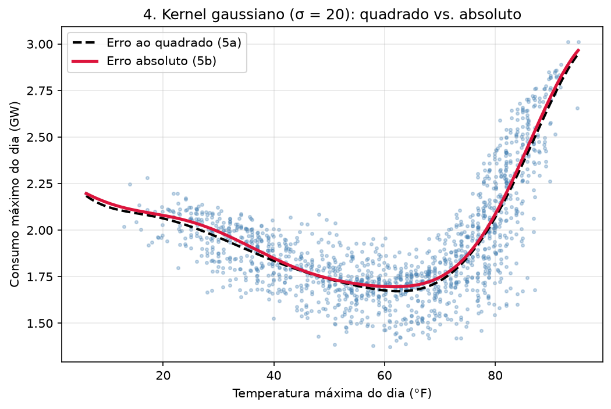

Questão 5: regressão linear e não linear
O problema
Prever o pico de consumo de energia do dia (GW) a partir da temperatura máxima do dia (°F), com 1.460 dias de Pittsburgh (2008–2011). Os dados têm formato de U: o consumo sobe no frio (aquecimento) e, principalmente, no calor (ar-condicionado).
O método
Todos os modelos têm a mesma forma: consumo = letra × coisa + letra × coisa + … + constante. O computador descobre as letras; o que muda de um modelo para outro é a "coisa".
As letras são encontradas pelas equações normais: a fórmula que dá o menor erro ao quadrado, vinda de "derivar o erro e igualar a zero".

| Modelo | A "coisa" | Erro médio² | RMSE (GW) |
|---|---|---|---|
| Chutar sempre a média | — | 0,0873 | 0,296 |
| Reta | x | 0,0772 | 0,278 |
| Polinômio grau 5 | x, x², …, x⁵ | 0,0249 | 0,158 |
| RBF | 5 "sininhos" (σ = 20) | 0,0250 | 0,158 |
| Kernel gaussiano | 1 sininho por dia + multa (λ = 10⁻⁴) | 0,0247 | 0,157 |
O erro ao quadrado se comporta como a média (os picos puxam a curva); o erro absoluto, como a mediana (a curva segue a maioria dos dias). Sem fórmula pronta, o problema vira programação linear, resolvida com o cvxpy.


| Modelo | Treinado com | Erro médio absoluto | Erro médio² |
|---|---|---|---|
| Reta | quadrado | 0,2265 | 0,0772 |
| Reta | absoluto | 0,2193 | 0,0854 |
| Polinômio grau 5 | quadrado | 0,1204 | 0,0249 |
| Polinômio grau 5 | absoluto | 0,1192 | 0,0253 |
| RBF | quadrado | 0,1215 | 0,0250 |
| RBF | absoluto | 0,1200 | 0,0256 |
| Kernel | quadrado | 0,1198 | 0,0247 |
| Kernel | absoluto | 0,1182 | 0,0251 |
Cada modelo ganha na régua em que foi treinado.
Conclusões
- A reta não dobra: ganha quase nada de "chutar a média".
- Os três modelos não lineares empatam (erro típico de ~0,16 GW) e só diferem nas pontas.
- O erro absoluto é mais robusto aos picos; o quadrado dá mais atenção a eles.